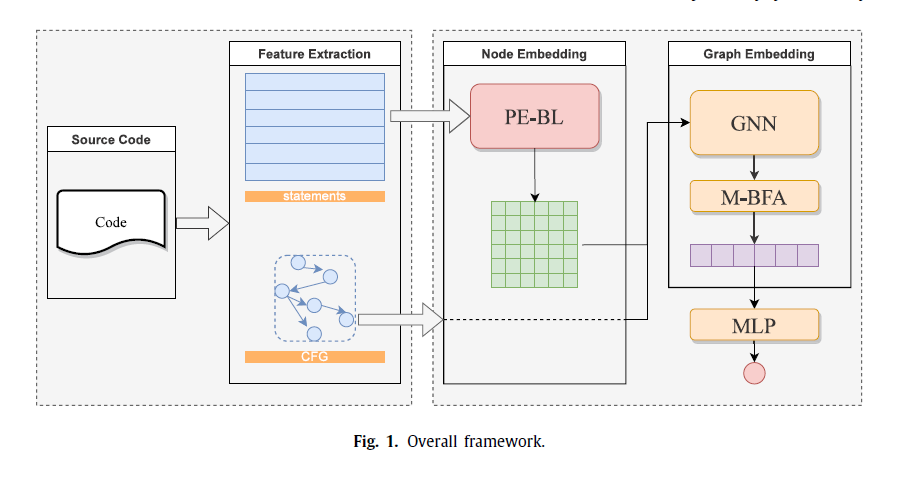
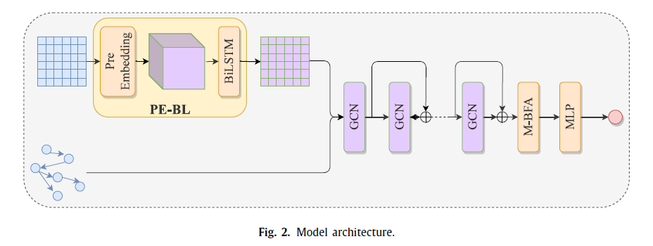
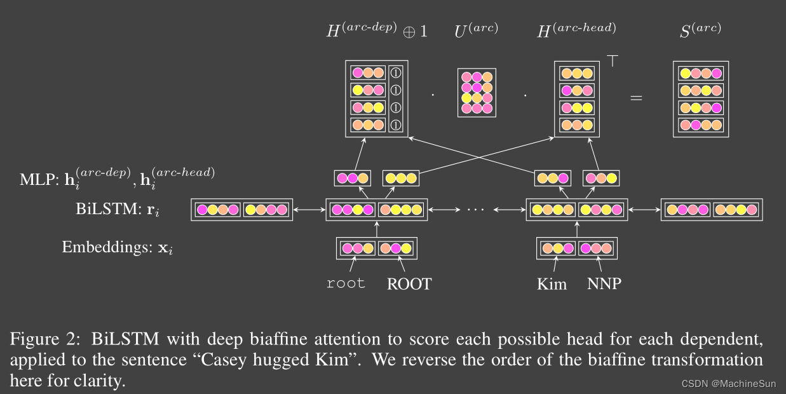
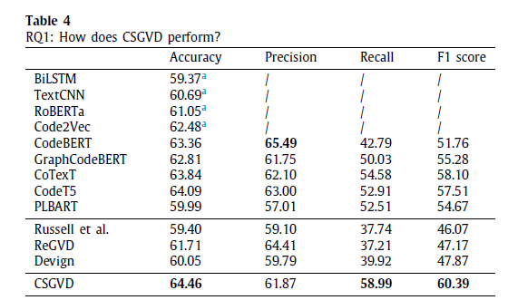
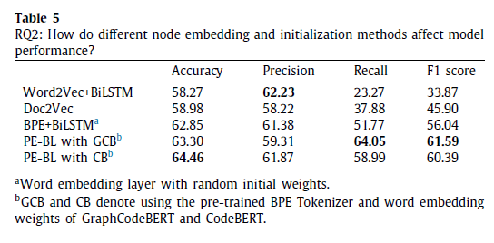
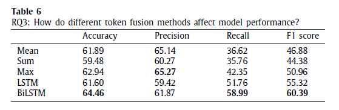
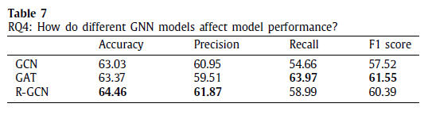
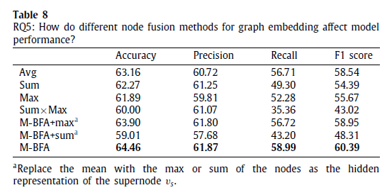

读paper5-基于图的缺陷检测与修复两篇
读paper5-基于图的缺陷检测与修复两篇
CSGVD: A deep learning approach combining sequence and graph embedding for source code vulnerability detection
一种结合序列和图嵌入的深度学习方法用于源代码漏洞检测
利用原始源代码的控制流图，将函数级的漏洞检测视为一个图二分类任务。首先，我们提出了一个PE-BL模块，它继承并增强了预训练语言模型的知识。通过使用序列嵌入，它提取了代码在控制流图中的局部语义特征作为节点嵌入。其次，CSGVD使用具有残差连接的（with residual connectivity）图神经网络来提取图的结构化信息。最后，我们提出了一种均值双仿射注意力池化（M-BFA）方法，以更好地聚合节点信息作为图的特征表示。
符号定义如下：
- ：数据的一个样本
- ：原始源代码的集合
- ：标签集，1表示存在漏洞
- ： 实例的数量
- ：源代码对应的控制流图
- 表示图中的一组 个节点
- 节点特征矩阵
- 每个节点 由一个 维向量 表示
- ：邻接矩阵。当 等于1时，表示节点 和节点 之间存在边
- 一个映射函数，用来确定给定的源代码是否存在漏洞
- 学习方式还是经典的最小化带有正则化的模型参数 的损失函数
Framework

左侧的特征提取和右侧的神经网络模型，神经网络模型如图：

Code to CFG
使用Joern来解析源代码并提取需要的控制流图（CFG）。Joern 是一个用于分析源代码、字节码和二进制可执行文件的平台。它生成代码属性图 (CPG)，即用于跨语言代码分析的代码图形表示。https://github.com/joernio/joern
BiLSTM
双向长短期记忆网络（Bidirectional Long Short-Term Memory，BiLSTM）是一种用于序列建模的循环神经网络（RNN）变体。它结合了长短期记忆网络（LSTM）的能力来捕获序列中长期依赖关系的优点，以及双向性的特点，能够同时考虑序列中每个时间步的过去和未来信息。
BiLSTM由两个独立的LSTM网络组成，一个按时间顺序处理输入序列，另一个按相反的顺序处理输入序列。这两个网络的输出在每个时间步都被连接起来，以提供对当前时间步的双向上下文信息。这样，BiLSTM可以利用当前时刻之前和之后的所有信息来预测当前时刻的输出。
BiLSTM的主要优点包括：
- 捕获长期依赖关系： 由于LSTM单元的设计，BiLSTM可以有效地捕获序列中的长期依赖关系，即使序列很长，也能够保持梯度的稳定性，避免梯度消失或爆炸的问题。
- 双向信息： BiLSTM能够同时考虑当前时刻之前和之后的信息，因此可以更好地理解输入序列的整体语境，提供更丰富的上下文信息。
- 适用于多种任务： BiLSTM可用于各种序列建模任务，包括文本分类、命名实体识别、序列标注、机器翻译等。
- 灵活性： BiLSTM可以很容易地与其他神经网络结构组合使用，如卷积神经网络（CNN）或注意力机制，以进一步提升性能。
总的来说，BiLSTM在处理序列数据时表现出色，特别是在需要考虑序列上下文信息的任务中，它已成为许多自然语言处理和时间序列分析任务的标准模型之一。
Node embedding：PE-BL模块
由一个嵌入层和一个双向LSTM层组成。具体来说，引入了预训练的编程语言模型CodeBERT来初始化嵌入层，而不是传统的嵌入层，使用它训练好的词嵌入权重来初始化自身的嵌入层权重。此外，CodeBERT使用的字节对编码（BPE）分词器也可以缓解OOV问题。
OOV（Out-Of-Vocabulary）问题是指模型在处理文本数据时，遇到了未在词汇库中出现过的词汇，导致模型无法理解这些词汇，从而影响了模型的性能。
BPE（Byte Pair Encoder）算法， 也叫做digram coding双字母组合编码，主要目的是为了数据压缩。算法描述为字符串里频率最常见的一对字符被一个没有在这个字符中出现的字符代替的层层迭代过程。利用BPE算法旨在发现各种介于word和character之间的词根，从而尽可能的覆盖各种各样的OOV。
将函数拆分为一组语句 和语句级控制流图（CFG），其中 对应于 CFG 的节点 。基本工作步骤如下：
- 分词：通过CodeBERT的预先训练的BPE分词器对每个语句进行分词
- 分词向量化：使用CodeBERT的词嵌入层权重来初始化自身权重，以获取每个分词得到的token的向量表示
- 语句向量化：使用双向LSTM融合代码的局部语义信息，并得到语句 对应节点 的向量表示
Residual graph neural network
GCN层首先接收来自BiLSTM的n个输出语句嵌入，以及每个节点之间的边。源代码的图结构信息，包括节点和边信息，被提取并输入到GCN中。特别地，我们在图中的每个节点上添加了自环连接。CSGVD会通过节点状态和相邻节点之间的控制流关系以增量的方式传播信息。模型架构由具有残差连接性的两个图卷积网络组成。
Residual GCN通过下式在不同GCN层之间使用跳跃连接来定义（defined by its use of skip connectivity over
different GCN layers）我怎么有点看不懂这句话
其中 表示当前层， 是第 层的隐藏状态矩阵。 是邻接矩阵
Graph embedding
这里主要需要了解biaffine attention
biaffine并不是双向性或MLP机制，而是使用一个仿射变化在单个LSTM输出状态r预测所有类别的得分
若每个句子中有N个单词，包括根在内一共有d=N+1个词，每个词都需要得到一个分数，因为句子中词的个数是不确定的，所以这是一个不定类别的分类问题。
为了解决上述不定类别的分类问题，采用两个MLP对BiLSTM的隐层输出向量进行重新编码：，然后通过线性变化和双仿射分类器得到的结果就是deep bilinear attention mechanism

可以参考https://blog.csdn.net/sinat_34072381/article/details/106864586
M-BFA
均值双仿射注意力池化（Mean Bi-Affine Attention Pooling）是一种用于自然语言处理（NLP）任务的注意力机制。这种池化方法被设计用于提取句子级别的语义信息，尤其适用于文本分类、文本匹配等任务。
在均值双仿射注意力池化中，首先对输入的文本序列进行表示学习，通常通过预训练的词嵌入模型（如Word2Vec、GloVe或BERT）来获得每个词的词向量表示。然后，利用这些词向量表示计算句子级别的语义信息。
具体来说，均值双仿射注意力池化包括以下几个步骤：
- 双仿射注意力计算： 首先，通过一个双仿射模型计算每个词与其他词之间的注意力权重。这个双仿射模型会考虑每对词之间的相互作用，以及它们之间的语义关系，从而确定它们之间的注意力权重。
- 加权平均池化： 接下来，利用计算得到的注意力权重，对所有词的表示进行加权平均，得到整个句子的表示。这样可以将句子级别的语义信息编码为一个固定长度的向量。
- 池化输出： 最后，将加权平均得到的句子表示作为池化输出，用于后续的任务，如文本分类或文本匹配。
通过这种方式，均值双仿射注意力池化能够有效地捕捉输入文本序列中词与词之间的语义关系，从而提取出句子级别的语义信息，为各种NLP任务提供了有力的语义表示。
RQ1: How does CSGVD perform?

RQ2: How do different node embedding and initialization methods affect model performance?
第一种方式是在训练集上训练我们的字符级单词分词器，并使用随机初始化来初始化嵌入层参数，另外两种方式是使用CodeBERT和GraphCodeBERT来初始化嵌入层权重。此外还添加了Word2Vec和Doc2Vec方法来证明我们方法的有效性。

RQ3: How do different token fusion methods affect model performance?
比较了五种不同的融合方法，包括三种常见的融合方法（“mean”、“sum"和"max”），以及两种需要神经网络辅助的方法，即LSTM和双向LSTM。
从表6的结果可以看出，双向LSTM具有更高的度量指标。与其他方法相比，双向LSTM能够更好地融合代码语句中的上下文信息。此外，使用双向LSTM来获取单个代码语句的向量表示可以提高后续图分类任务的性能。

RQ4: How do different GNN models affect model performance?

R-GCN即Residual graph neural network
RQ5: How do different graph embedding methods affect model performance?

Automated Program Repair for Introductory Programming Assignments
这篇是纯基于AST的错误分析，针对的是学生编程作业的场景，代码量很小的场景，
通过一个自动构建算法（即从现有的错误-正确代码对中学习代码修改）构建代码修改描述（CEM），然后使用CEM替换错误程序中满足替换条件的抽象语法子树，对替换的子树中使用不同的掩码策略对语法元素进行掩码，最后使用CodeBERT对掩码标记元素进行重新生成。
当所有错误程序中的掩码都被生成后，就会得到候选修补程序。随后，将给定的测试套件应用于每个编译后的候选修补程序。如果其中一个候选修补程序通过了所有的测试用例，则认为故障程序已经成功修复。
所以论文核心还是在对AST的处理策略上。